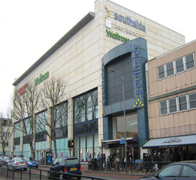
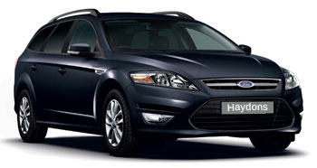

Wandsworth minicab To All Local & Airport Destinations 24 Hours A Day
Haydons Cars operates Wandsworth minicab covering all postcodes areas throughout South West London providing an outstanding minicab service to our passengers 24 hours a day. Our base is in an ideal location able to serve to all parts of London and the UK, and due to our central location we are able to provide low fares on all regional airport transfers.
Affordable travel
Our fares are some of the most competitive available anywhere locally and our service is second to none. We offer the lowest prices for minicab with in Wimbledon and the surrounding areas of SW19 and beyond and the lowest fares for airport transfers to Heathrow and Gatwick airports as well as all London transport hubs such as Waterloo and Liverpool Street stations.
Modern Fleet
We operate a fleet of modern and comfortable, well maintained vehicles licensed by the Public carriage Office (PCO) which is a part of Transport For London. We take the safety of our passengers and drivers very seriously which is why we adhere strictly to the rules set out for the correct maintenance of our minicab and hold all of our staff to a high standard in every area of our service. And all of our drivers are individually checked and authorised by the PCO to operate Private Hire minicab.
Unlike the larger minicab companies we provide a personalised Wimbledon minicab service designed to provide our passenger with a relaxing and calm journey from the moment we pick them up and until we set them of safely at their destination. We value each and every one of our passengers no matter how long or short the journey. Our reputation as Wimbledon's best minicab service is built on thousands of satisfied passengers travelling with us every month.
Airport and Transport hubs
Whether you are travelling within South London, or heading into the city or beyond or if you need to travel to an airport, you wont find a Wimbledon minicab service offering a better service or value for money. We pride ourselves on delivering a great travel experience to our passengers at unbeatable value. We specialise in airport transfers form SW19 and the surrounding areas to all London airports and transport hubs. We monitor live flight times 24 hours a day and will be there to collect you from your home and take you to your departure terminal or be there waiting to pick you up and take you home. And because of our location you are never far away from our base.